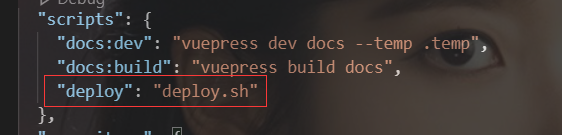
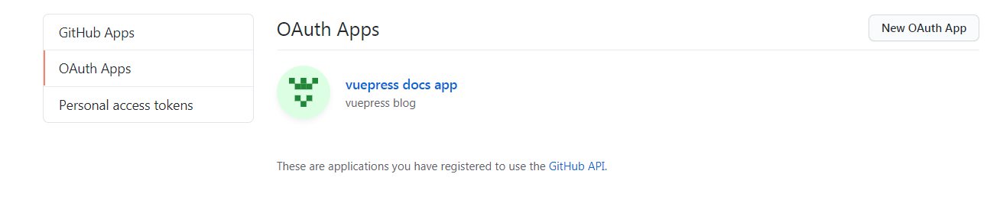
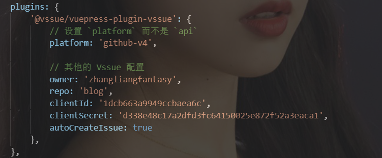
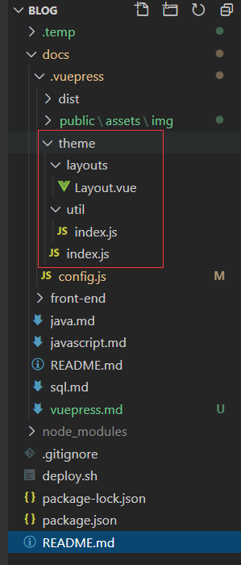
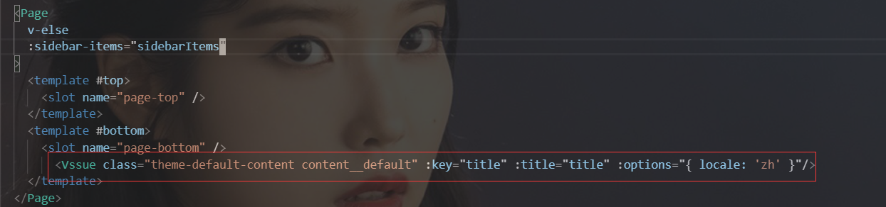
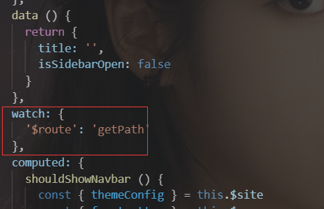
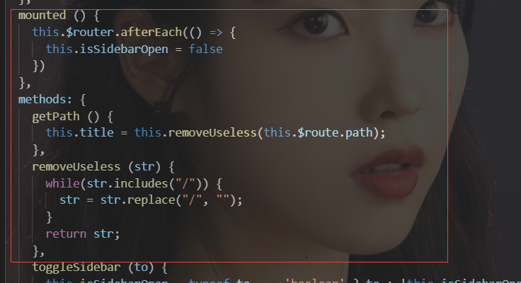

vuepress
- 该网站基于使用vuepress搭建，这篇blog将对搭建vuepress项目中比较繁琐的功能做一个简单的记录，以便日后参考。
1. SEO
2. 自动化部署
1. 将blog自动化部署到github的步骤
- 在项目根目录下创建一个deploy.sh文件，文件内容
- 在github上配置ssh来管理github账户
- 在package.json文件中添加启动命令

- 终端执行
npm run deploy即可自动打包并部署到github上去
3. vssue评论
- 该项目使用vssue做评论的功能，下面是使用vssue的注意事项
- 首先需要在github上创建OAuth Apps
- 点击头像下拉框 -> settings -> Developer settings -> OAuth APPs
- 
- 生成Client ID 和 Client secrets
- 配置源地址
- 在config中配置好插件
- 
- 注意： 在安装vssue插件时选择v4版本，否则会报跨域的错。。。。
- 将vssue配置成全局及防止评论共享的方案
- 
- Layout.vue中代码，如图
  
4.google analytics
- 注册google analytics账号 -> 填写资源链接
- 安装插件
cnpm install -D @vuepress/plugin-google-analytics